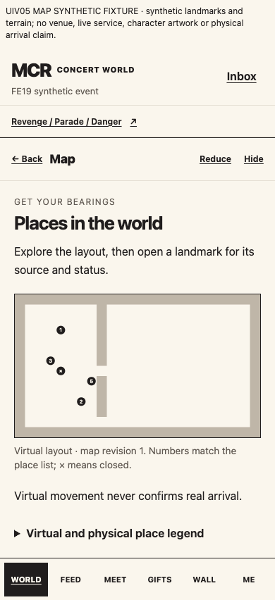
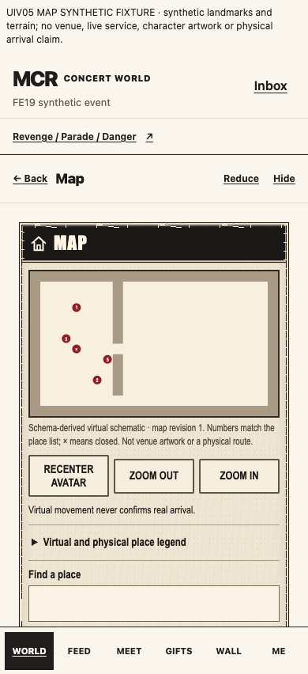
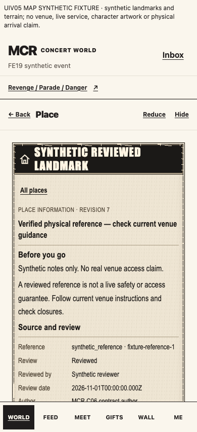

The original ten-screen reference is unchanged; compare its upper-row MAP composition. Black window chrome, an ivory symmetric frame, map-first hierarchy and adjacent camera controls are adopted. The current schema-derived schematic is explicitly labeled and uses existing validated geometry only. No artwork, routes, landmarks, venue facts or photographic assets were invented. Improving presentation is not approved map-art or venue/world acceptance.



